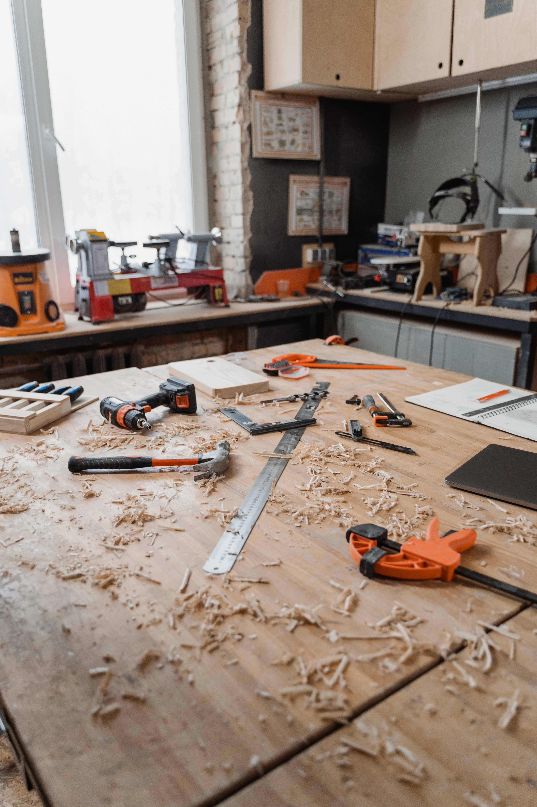

<p-carousel [value]="carousel"  [numVisible]="3" [numScroll]="1" [circular]="true" [autoplayInterval]="3000">
    <ng-template let-carousel pTemplate="item">
       <div class="carousel" [routerLink]="'/project/'+carousel.id">
           <!--  -->
           <!-- routeLink onclick sends to that project page -->
           
       </div>
    </ng-template>
</p-carousel>


<!--  -->


